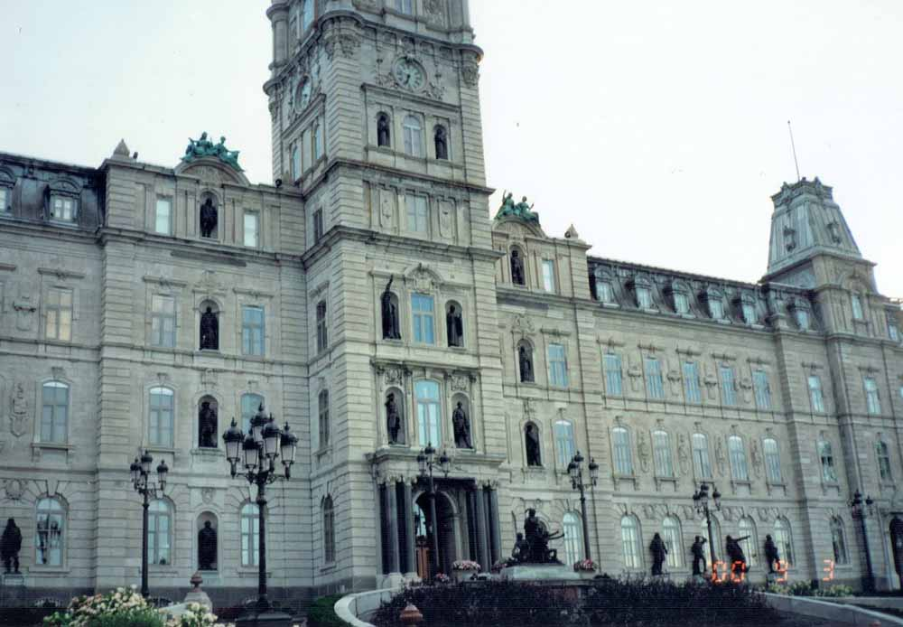
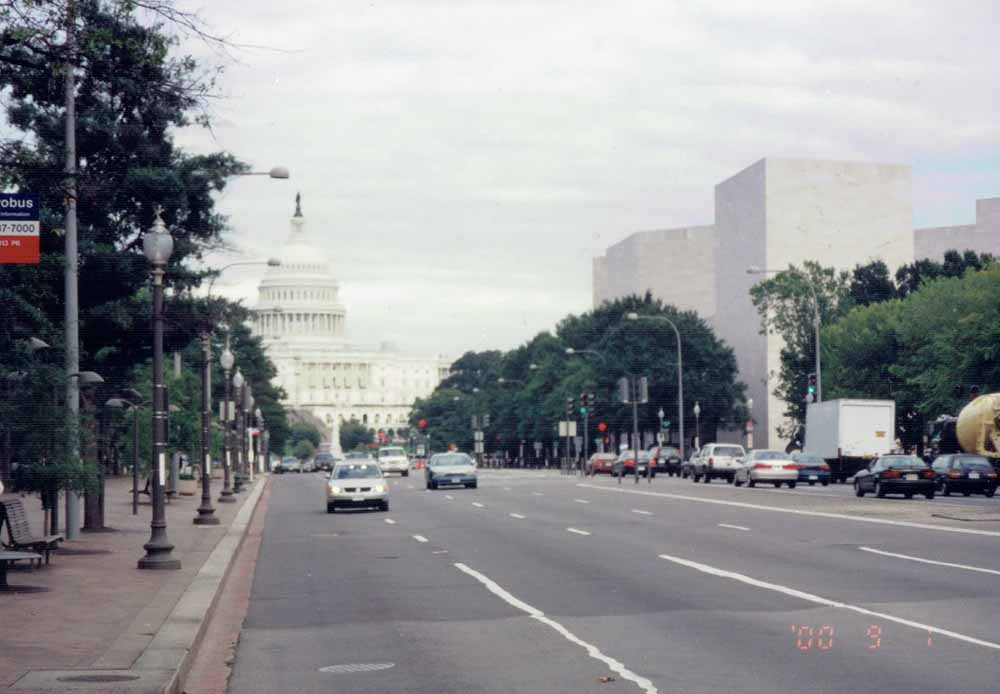
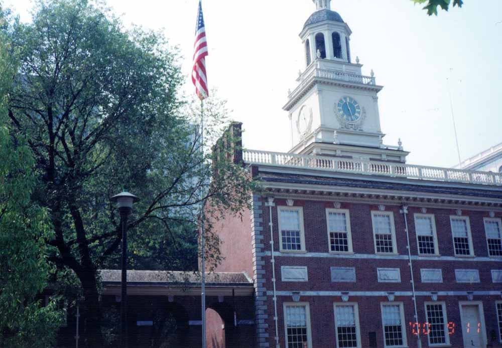
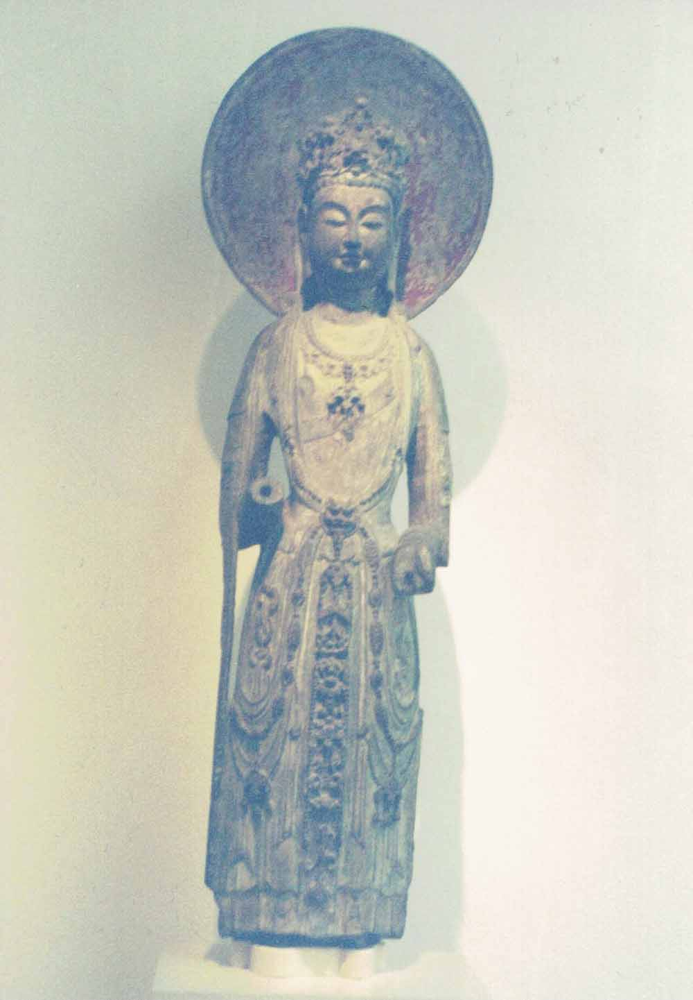

Ⅰ 初めてのカナダ （2000年）
①トロントの夕景色
①トロントの夕景色
平成12（2000）年8月24日朝、新幹線で東京に向かい、成田空港に着 いたのは12時半でした。ノースウェスト航空機（NW020便）は16時過 ぎに離陸します。目的地はカナダ南東のトロントですが、途中アメリカの中央北部ミネアポリスで乗り換えて行くのです。離陸間もなく食事が出て、海上を見ながら頂いているうちに、視界は暗くなり、夜に入ります。うとうとした後で、気がつくと明るくなり、暁光が差してきました。ダイナミックなロッキー山脈や蛇行する大河が見えてきます。やがて大平原の上に出ますと、整然と区画された大耕地が延々と続いています。
10時間飛んでミネアポリスで降りたのは現地時間の昼12時半でした。入国審査や荷物検査を受けて、しばらく待って小型機NW424便に乗り換え、15時頃に離陸して1時間半後にトロント空港に着きました。ナイアガラ観光の便などを調べたりしてから、予約していたホテル、コンフォート・イン・エアポート（Comfort Inn Airport）行きのバスを探して乗車、19時前にホテルに着きました。139号室に入り、持ちこみの食料を出して食べ、21時過ぎに休みます。
この写真はホテルの駐車場から見た郊外の夕景色です。ここオンタリオ州はアメリカのニューヨーク州に接し、カナダで最も豊かな州で、首都オタワは東の方ですが、トロントは南のオンタリオ湖畔にあり、対岸はアメリカです。ナイアガラにも近く、五大湖と大西洋にも通じる大都市です。
②ナイアガラ瀑布遠望
②ナイアガラ瀑布（アメリカ滝・カナダ滝）遠望
25日朝6時半、食堂でパン、ジュース、紅茶などを頂きます。9時50分、前日予約したナイアガラ観光のバスに乗りました。バスは市内を回って客を拾ってから、湖畔を右回りして対岸に渡って南に進みます。気が付くとナイアガラ滝のすぐ上流の岸を下っています。このナイアガラ川の対岸（東）がアメリカで、こちら側がカナダです。川が国境です。五大湖のうち南のエリー湖の水がここで滝となって一気に流れ落ち、急流をなして北のオンタリオ湖へと注ぐのです。滝はゴート島を挟んで、カナダ滝とアメリカ滝に分かれますが、前者の方が壮大です。皆と共にバスから降りて、高いスカイライン・ブロック・ホテル（Skyline Brock Hotel）の10階で、滝を見ながらの昼食です。
前頁の写真はそこからの眺めです。左前方がアメリカ滝で幅約300メートル、こちら側の右に煙るのがカナダ滝で奥にえぐられた湾曲面は約800メートル、落差は共に50メートル程とか。食後、皆と一緒に観光バスの運転手兼ガイド氏の先導で、観光船の船着場へ向かって下って行きます。大瀑布が前方に迫っています。
③観光船から見上げるナイアガラ瀑布
③観光船から見上げるナイアガラ瀑布（アメリカ滝）
霧の乙女号（Maid of the Mist）という船に乗りました。水しぶきをもろにかぶるので、あらかじめ貰っていた青いビニールのレインコートを着ます。コースは、レインボーブリッジの上流の乗り場から、向かいのアメリカ滝の下まで行ってから、右に曲がってカナダ滝に向かい、ぐんと接近してからしばらく停止して、そして戻ってくるというもので、乗船時間は30分ほどです。
なお対岸のアメリカ側にも観光船の乗り場があるようです。幅400メートルぐらいのナイアガラ川を何艘かの観光船が往来して、その壮観さに圧倒される思いでした。船上からシェラトンホテルやミノルタタワーが見えます。ナイアガラ滝が流れ落ちるナイアガラ川は北に流れて、オンタリオ湖に注ぎ、その水はセントローレンス川に流れ、大西洋に通じるのです。
船を下りてから、また観光バスに乗って川沿いに進みます。処々に停車して見物しました。植物園の花時計や、大きくて色とりどりの花文字も見えます。川には漁船や帆掛け船も通ります。途中には萬国多宝寺という大きなお寺が見えました。川沿いには発電所もあります。それから更に下ってワイン工場（Winery Magnatta）に案内されます。何種類かのワインを試飲した後、1本を約10ドルで買いました。それから湖畔を回って19時半ごろホテルに着きました。お湯と氷を貰い、レストランからビールを買ってきて、部屋で夕食とします。
④ムースが立っているトロント市街
8月26日、7時半に食堂で朝食の後、荷物をまとめます。この日は、モントリオールに出発する前にトロントの街を見物することにしました。8時半に宿を出てバスに乗って、市内へ向かい、ユニオン駅の近くで観光バスに乗り込みます。前日予約していたのでした。トロントはこの駅前から南北を貫くヤング大通りを中心に、碁盤の目状に整備されている街です。ダウンタウンには高層ビルが立ち並び、世界一高いとかいうCNタワーが聳そび えています。
北の方に進むと、劇場、市庁舎や州議事堂、大学などがありますが、所々に公園があります。面白いことにこの街のあちこちに、写真のような動物の置物があるのです。これはムースといって、カナダや北米にいる大きな鹿です。いろいろな動物が見られます。動物の背中や脚に世界中の旗まで描かれたものもあります。この街の国際性や陽気な気風を感じたような気がしました。このあたりは各国からの移民で大都市に成長したそうです。
北の方に向かうと、「ハレー・クリシュナ」という標識のある教会風のヒンドゥ寺院があり、更に高台に向かうと、中世の城のような豪邸が見えてきます。
④ムースが立っているトロント市街
⑤博物館となった城のような豪邸
⑤博物館となった城のような豪邸
高台で停車したところで右の写真を撮りました。近くにも行けず、ガイド氏の説明も記憶にありません。『地球の歩き方86 カナダ東部』によると、これはカーサ・ロマ（Casa Loma）といい、ナイアガラの水力発電での富を得た実業家ヘンリー・ミル・ペレット（Henry Mill Pellatt）が1911年から3年の歳月をかけて建造したのだそうです。隣にはガス会社で財を成した資本家ジェームス・オースティン（James Austin）が1866年に建設した邸宅スパダイナ・ハウスがあるとか。両家とも没落したそうですが、その豪邸は歴史的価値が高く、博物館になっているのだそうです。
11時半、観光バスがユニオン駅の近くの観光バスの出発点に帰りついたところで下車します。ユニオン駅に行き、モントリオール行きの列車時刻表を確かめて切符を求めます。2人で186ドル余をVISAカードで支払いました。
この駅はオンタリオ湖に近い鉄道駅で、近くにCNタワー（カナダ国鉄タワー）が聳えています。そこへはユニオン駅の2階から廊下でつながっていますので、私共も行って見ますが、タワーの展望台に昇る人々の行列が長いので乗るのはあきらめました。市内の遠くからでも見えるこのタワーは、高さが553メートルもあって、地上から3分の2の高さのところに大展望台、更にその上にもエレベーターで上れる狭い空中展望台があるそうです。
⑥トロントの公園
⑥トロントの公園
そのあと地下街に入り、中国料理の食堂を見つけてご飯とゆで玉子を注文します。トロントのダウンタウンには南のユニオン駅から中心街まで巨大な地下街があるそうです。これは40年ほど前から始まったそうで、冬マイナス30度にもなる寒さから人々を守るために造られ、大ショッピングセンターにもなっているとか。これはモントリオールでも見られる構造で、寒い大都市には地下街が発達しているのです。地下街から地上に出ると、公園があります。
またトロントの高層ビル街の南にはマーケットや、広場、公園があります。見慣れないガラス張りの円錐台形の屋根の建物もあれば、花々をあしらった大型プランターもあります。写真のようなとんがった傘状の物は何なのか判りませんが、何かを保護しているのかも知れません。ともかく自然と調和したユニークな雰囲気の街なのです。近くには男性ヌードが体操をしているような彫刻もあり、若い人たちが写真を撮っていました。
そのあと地下街に入り、中国料理の食堂でエビ入り野菜炒めをのせたご飯を頂きます。先に注文したご飯とゆで玉子を受け取り、ユニオン駅の荷物扱所から持物を受け取って、モントリオール行き15時35分発の列車に乗りました。
⑦モントリオールとセントローレンス川
⑦モントリオールとセントローレンス川
8月26日15時半出発した列車は、北東500キロメートルのモントリオールへ向かいます。疲れて眠っているうちに暗くなって、気がつくと巨大な暗いビルが見えてきます。モントリオール中央駅です。20時15分頃です。荷物を持ってタクシーに乗り込んだものの、「ホテル・トラベロッジ（Travelodge）へ」と指示すると、そんな宿は何軒もあるとか。そこに着くと80ドルを請求され、そんな筈はないと言いかけると5ドルが戻ってきましたが、押し切られます。甚だ不愉快。21時前に238号室に落ち着きます。学会推薦の割安なホテルですが、会場にも食料品店や料理店にも近く便利です。
27日朝7時半、食堂でパン、牛乳、ジュース等を頂いて、10時頃ホテルを出て、近所を回ります。近くに「唐人街」という大きな門がありました。食料品店で、きゅうり、玉子、果物などを買って帰り、宿の部屋において、また出かけます。学会の会場は歩いて5分ばかりのパレ・ド・コングレス（Palais des Congrès）でした。それから、川岸の船着場に向かいます。気温は仙台の初秋の感じです。ここは芝生や遊歩道が整備され、花壇もある広い空間です。大小さまざまな船が停泊していました。何しろこれは大西洋と五大湖をつなぐ大河であり、大型外国船も通る北米大陸の大動脈なのです。この街はこの川岸に17世紀に建設され、いまは人口300万の大都市です。ケベック州は旧フランス植民地であったせいでフランス語が優勢です。
⑧モントリオールの旧市街の中心プラス・ダルム
⑧モントリオールの旧市街の中心プラス・ダルム
埠頭のある川岸に沿った一帯が旧市街で、石造りの古い重厚な建物が並んでいます。川岸の近くの路上で民芸品市場が開かれていて、一婦人がドラムをたたいて悲しそうな歌を歌っていました。写真は近くのプラス・ダルム広場です。この銅像は17世紀にこの地を開拓したメゾヌーヴだそうです。観光馬車が通り過ぎて行きます。この辺はかつての経済・宗教の中心で、この向かいには、青のステンドグラスが美しいノートルダム聖堂があり、その周囲に修道院、銀行、市庁舎など重量感のある建物が多いのです。北の新市街は、ビジネスやショッピングの中心地で、大学もあります。
12時半頃会場に行きますと、日本の学者さんたちにも会いました。受付で書類一式を受け取り、しばらく学友丸山孝雄さんと語り合ってから、宿に帰って昼食です。16時から学会（ICANAS）開会式が始まり、私も出ます。その後のレセプションでは、クラッカー、パン、ワインなどの軽食が出ました。19時半、唐人街に寄って食料を仕入れて、宿に帰って食べ直します。
⑨セントローレンス川の巡航船上での晩餐会
7時半、食堂で朝食後、夫は学会会場に出かけました。お昼に帰ってきて一緒に食事です。夕方はセントローレンス川のクルーズでの晩餐会に出席すると予約してきたと言うのです。会場からバスが出るというので私は18時前に行きます。大勢乗ったバスは川岸に向かい埠頭の近くで停まりました。それからみんな大きい2階建ての観光船に乗り込みます。
次頁の写真は乗船前に写真屋さんが撮ってくれた集合写真の焼きなおしです。一行は学会のメンバーで希望者だけですが、アルゼンチンから来たカルメン・ドラゴネティ夫妻が夫の隣にいます。川岸には川に突き出ている埠頭が数本あって、その北端の時計塔（展望台）は船上から見えます。向かいの島には木陰の向こうに白い大きな金網状のドームが見えます。そのうち大きな鉄橋の下を過ぎると、川の流れも速くなります。だんだん暗くなって景色も見えなくなり、明かりだけがキラキラ夜空に輝いています。船は川を下って、またゆっくり戻ってくるようです。飲み物やご馳走が運ばれました。皆面識がない人たちの中でフランスのインド大使館勤務という紳士と隣席になり、夫は対話しています。女性歌手が器楽に合わせて、声高らかに歌っています。彼女はアンコールに応えてにこにこと歌い続けます。
その後バスで会場まで帰って、歩いて宿に着いたのは23時半でした。
⑨セントローレンス川の巡航船上での晩餐会
⑩モントリオール美術館のガンダーラの菩薩像
8月29日から9月1日まで、夫は朝学会に出かけて行って、昼には帰って来て食事をしてからまた出かけました。その間、私は一人で街を見たり、博物館に行ったりします。地下鉄でユクァム駅に行くと、ケベック大学モントリオール校が、地下と直接つながっているのを知りました。
宿からシャトー・ラムゼイ博物館に歩いて行ってみます。ここは18世紀～19世紀の家具、衣装、時計、美術品などの歴史博物館になっています。電車を乗り換えて、モントリオール美術館に行きました。1860年建築の神殿のような旧館と1991年開館の斬新な新館が向かい合っています。カナダの美術が中心ですが、世界各国の絵画、彫刻、写真など沢山あります。この写真はガンダーラの菩薩像で、光背に一対の供養者像が見えます。
夫は毎日18時前に帰って来ます。大抵は中華料理店に行って食べ物を持ち帰って夕食です。伊勢海老も食べられるとは感激です。
9月1日は学会最後の日です。夫はこの日に発表があり、質問にも答えられて無事終わった、といって17時過ぎに帰って来ました。2人で散歩し中華料理店で蟹入りキシメンとご飯を買って、部屋に帰って乾杯し休みます。
⑩モントリオール美術館のガンダーラの菩薩像
⑪ケベックの聖トリニティ大聖堂
⑪ケベックの聖トリニティ大聖堂
9月2日、モントリオールから東に約200キロメートルの州都ケベック市に行きます。11時発のバスに乗り、13時45分ケベックのバスターミナルに着きました。宿を探して近くのホテルに入って女主人に尋ねると、この辺には部屋はどこにもないと言って、郊外の宿を紹介してくれます。その宿モテル・キャピタル（Motel Capitale）へタクシーで行くと着いたのは15時半頃です。持ち合わせのものを食べてから、タクシーで旧市街へ出かけました。
ケベックは、坂の多い街です。バスが着いたところの川沿いに広がる下町、その上に城壁の向こうに聳える高層建築が建つ旧市街と、更に城門から高台に広がる新市街とに分かれるそうです。城壁の南端にはフランスの植民地時代からの星型の城塞があります。私たちは城壁の中のノートルダム大聖堂前でタクシーから降りました。ここは350年の歴史があるというのに、今の建物は1925年に建設されたそうです。この写真は近くの聖トリニティ大聖堂（Cathédrale de la Sainte-Trinité de Québec）です。イギリスの植民地になってから1804年に建てられたものとか。高い尖塔が目立ちますが、内部の赤と青の鮮やかなステンドグラスが印象的です。城壁の上に登って城砦の一画まで行って、下町や川を眺めてから下りて、イタリア料理店で炒めご飯などを食べ、タクシーを拾って帰ります。21時過ぎでした。
⑪聖トリニティ大聖堂の内部
⑫ケベックの市街と川向うのオルレアン島
⑫ケベックの市街と川向うのオルレアン島
9月3日朝9時過ぎ、タクシーで城砦の向こうに広がる戦場公園へ行きます。ここは1759年に英仏軍が戦って英軍が勝利した古戦場です。広い芝生を進んで行くとジャンヌ・ダルク庭園でした。花園の真ん中に馬に乗って剣をかざすオルレアンの少女像が立っています。彼女は15世紀のはじめ、フランス軍を勝利に導いたのに魔女裁判で火刑にされたというのです。更に行くとケベック博物館です。絵画や彫刻、工芸品、旧原住民の生活用具など沢山あります。クリークホーフ（Cornelius Krieghof, 1815-1872）が描くカナダの情景に感動し、カタログを買って郵送して貰うことにしました。
14時頃にここを出て新市街を歩き、高いビルの31階の展望台に上って、四方を見下ろします。上の写真は東の方の旧市街を見下ろしたところです。セントローレンス川の向こうに緑のオルレアン島が見えます。その左に私らの宿があるはずです。右前方の城のような建物はケベックのシンボルという高級ホテル、シャトー・フロンテナック（Château Frontenac）で、1893年に造られたそうです。急傾斜した大小様々な屋根と、煉瓦づくりの外観はどこから見ても壮麗です。

⑬ケベック州議事堂
⑬ケベック州議事堂
展望台から降りて、東の方に戻って行くと、白い石造りの高い建物があります。これが1886年に建造されたという州議事堂で、建物の内外に英雄や聖人の像などが沢山あります。前庭は草花に飾られ、噴水の池があります。ケベック州はカナダ最大の州で、また最も歴史が古く、ここは博物館ともなっているそうです。カナダに入った白人はフランス人が最初で、セントローレンス川沿いに、土地を開拓し商工業を発展させ、英国と覇権を争って来たそうです。
議事堂のすぐ北側にはヒルトンホテル、コンベンションセンターなどの大きい建物があり、その北側にあるTokyoという日本料理店に行きましたが、開店前でした。しばらく歩いて城門の近くの店で、米飯と野菜のソテー等を求めて食べ、ご飯をつめてもらうと30ドル余でした。タクシーを拾って18時に帰ります。
⑭モンモランシーの滝
9月4日、地図に依れば宿の近くに滝があるはずです。モンモランシーの滝です。朝8時頃、タクシーを呼んで貰って見に行きます。ケベック市の東10キロメートル、オルレアン島に渡る橋の側です。ナイアガラより30メートルも高い83メートルもあるそうですが、迫力がありません。滝壺近くまで歩いて行って、水辺りを歩いて見ていると、水面に虹がくっきりと写っています。岩肌に緑が映え、流れ落ちる細い白糸が無数に見えます。この滝は冬にはクリークホーフの画にもあるように、凍結して巨大な氷柱と化すようです。私共は右側の岩の絶壁に懸かる木の階段を上って行きますと、滝の真上の吊り橋に出ます。その上流は浅いダムになっていて、ダムから水が落ちているのです。上から見る滝の水がビール色なのが興ざめです。橋の上の方に遊園地と展望台やお土産屋、飲食店もあって、ここでタクシーを呼んで貰い、モテルに寄って荷物を積み、バス・ステーションへ行きます。
12時発のモントリオール行きの急行バスに乗ります。15時半にモントリオールのバスターミナルに着きました。歩いて唐人街に入り、中華料理店で遅い昼食をとり、17時過ぎに前に泊まった宿に入ります。緯度の高いカナダの夕日を眺めるのは今日限りです。味噌汁を作ってご飯を頂きました。
9月5日朝、7時過ぎにタクシーでモントリオールのドルヴァル空港へ行き、NW1101便に塔乗、10時20分離陸、アメリカのデトロイトへ11時半に着きます。ここで宿を予約し、次にNW072便で、11時50分離陸して、ワシントン空港（Regan Washington National Airport）に着いたのは14時50分でした。
⑭モンモランシーの滝
⑭モンモランシーの滝
Ⅱ 初めての、そして再度のアメリカ （1995年、2000年）
⑮オーランドのユニバーサル・スタジオ
最初のアメリカの旅の思い出を辿ってみます。平成7（1995）年11月11日。この日の午後、私は横浜で仕事をしていた次女えみと東京駅で待ち合わせして成田空港に行きました。空港で両替すると30,000円が288ドル余となりました。
成田発18時25分発のアメリカン航空機（AA128便）は飛び立ちます。初めてみる眼下の雲と青い海原、恐怖感も複雑にからんでドキドキしていると、スチュワーデスさんが笑顔で食事をサービスしてくれ救われる思いでした。
西海岸のサンノゼで入国審査があり、それからコロラド高原とロッキー山脈のゴツゴツした岩肌を眺めながら飛行します。平野に入り街が見えたと思ったら、ダラスに飛行機は着陸し、乗客の一部の人々を降ろして、また飛び立ちます。
オーランド空港に着いたのは、現地時間の11日22時過ぎで夜です。空港には旅行代理店HISの係の人が迎えに来ていて、ホテル・トラベロッジへ連れて行ってくれます。ホテルも案内人も手配済みでした。ここはフロリダ半島の中ほどで暑いのです。
12日、朝8時過ぎホテルへ係の人が迎えにきて、ユニバーサル・スタジオ観光となりました。次頁の写真のようなテーマ館がいくつもあって人々が行列を作って入場しています。ジーパン・スタイルの娘（えみ）が前に立っています。この日は夜の観光もあって、よそのカップルと4人で見物や買い物を楽しんだのでした。
⑮オーランドのユニバーサル・スタジオ
⑯NASA・ケネディー宇宙センター
⑯NASA・ケネディー宇宙センター
11月13日はオプショナルツアーの日です。娘は、ディズニーワールドへ行くといって、1人でバスに乗って出かけます。私はNASAのケネディー宇宙センターに行くことにしました。ちょうど別の家族4人組が希望していたので一緒にHISの案内人の車で出かけます。オーランドから出て東海岸のスペースポートまで車で1時間。アメリカは広いなーと実感しました。
大西洋岸の広大な土地にスペースシャトルの発射基地があります。まず資料館を訪れるとアポロ11号月面着陸船が展示され、宇宙服や月から持ち帰った石や砂などもありました。映画で1969年人類初の有人宇宙船の快挙が映し出されています。また巨大な箱型のビルはシャトル組み立て工場だそうで、シャトル運搬用のトレーラーやロケットも見えます。写真は一緒に行った家族と共に、撮ってもらいました。スペースセンターの広い構内では観光客向けの施設やレストラン等があり、そこで食事をしたり、ショッピングをしたりします。帰りは大きい沼の上を水上ボートで渡りました。小さい子供たちはキャーキャーさわぎながら、スピードを楽しみ、ワニがいたといっては大人も大はしゃぎです。さすがにフロリダは楽しい空間がいっぱいの所です。
夕方に宿に帰りました。娘も帰りましたが、すぐに花火大会を見に行きました。
⑰ワシントン記念塔を望む
時間を戻して平成12（2000）年9月5日。また夫との旅行の続きです。この日カナダのモントリオールからアメリカのデトロイト乗り継ぎで、首都ワシントンへ飛んだのです。ここはカナダとは違って日差しが強いのです。空港（National Airport）からシャトルバスでホテル（Harrington Hotel）に着きます。16時頃です。持ち合わせの食べ物を頂いてから街に出て歩き回ります。この街はポトマック川の東岸に建設され、東西に交差する大小の道路に、斜めにも大道が走り整然としています。この宿は、ホワイトハウスから国会議事堂（Capitol）に斜めに走るペンシルヴェニア通りのそばでした。国会議事堂から西側には諸々の博物館が並び、その先に四角の尖塔ワシントン記念塔（170メートル）が立っています。その真北にホワイトハウスがあるのです。歩いてみると街の様子が分かります。ここは市の中心で、どの博物館にも歩いて行けますが、今日はもう遅い。FBI（連邦捜査局）の建物を見たりして、東北に向かって行くと、中国風の門があって「中国城」という額が掛かっているチャイナタウンです。近くの中華料理店に入って夕食をとってから、19時頃に宿に帰りました。
6日朝、8時頃食堂で朝食。9時40分に出かけます。ペンシルヴェニア通りを東南に進んで、国立自然史博物館に入り、地図をもらって、その東側の国立美術館の彫刻庭園を廻ります。ここで撮ったのが上の写真です。左の高い塔がワシントン記念塔で、その右の白いドームは国立自然史博物館です。
⑰ワシントン記念塔を望む
⑱国立美術館の絵画
⑱国立美術館の絵画
その東隣りは白大理石の広壮な国立美術館西館です。メロン（Andrew W. Mellon）の寄贈によって出来たというこの美術館は、1941年に建造され、収蔵品は13世紀から現代までのヨーロッパとアメリカ美術の優品が中心です。有名なレオナルド・ダ・ビンチの「ジネブラ・デ・ベンチの肖像」の写真は撮れましたが、あまり親しみが持てません。トーマス・サリー（Thomas Sully, 1783-1872）の「ハープをもつ女性」、レンブラント（Rembrandt, 1606-1669）の4人の少女像、グルーズ（Jean-Baptiste Greuze, 1725-1805）の「少女と小鳥」も魅力的です。この写真はルーベンス（Rubens, 1577-1640）の母子像です。
その東隣の東館は1978年に完成し、外も中も明るい建物で、20世紀の美術、ピカソやマチス、カンディンスキーの作品などを展示しています。メロン財団の収集品寄贈の後にも、多くの寄贈者によってますます充実して来たというのですから、アメリカ文化の奥行きと威信を感じます。17時頃、ここを出て、またも中国城の門をくぐって、龍之味飯店で食事。伊勢海老もご飯も美味しく、値段も25ドル20セントです。それから買い物をして宿に帰ると19時半でした。また21時半に夜食をとります。
⑲塀越しに見るホワイトハウス
⑲塀越しに見るホワイトハウス
9月7日、朝8時前にホテルを出て西のホワイトハウス（大統領官邸）に向かいます。時の大統領はクリントンでしたが、彼がジョッギングしているかなーと思って歩いて行きますと、見学する人達がもう50メートルも行列を作っています。それで私たちは中に入るのは遠慮して、塀の外を左の方から回って見ます。塀の外側にはいろいろな由緒のありそうな建造物があって、見て回るだけで1時間も掛かりました。この写真は南側正面です。近くの栗の大木の下で実を拾って食べました。ここから真南にワシントン記念塔が聳えています。東のペンシルヴェニア通りに入って国会議事堂を目指して進んで行くと、まもなく宿に着きました。パンや玉子などを買い、お湯を貰って、遅い朝食です。
食後ずっと南の方へ歩いて行って、昨日立ち寄った国立自然史博物館の南側に出ますと、東西に芝生の帯が延びて、東の彼方に国会議事堂、西方の近くにワシントン記念塔がよく見えます。南方に歩いて行ってフリーア美術館（Freer Gallery of Art）に向かいます。
⑳フリーア美術館で見るバールフトの彫刻
⑳フリーア美術館で見るバールフトの彫刻
この美術館の外観は簡素な四角形ですが、内部には日本、中国、韓国、インド、パキスタンなどの古美術品が、よく精選され巧みに展示されています。デトロイトの実業家フリーア（C. D. Freer）の寄贈した膨大な収集品を基礎として1923年に開館されたといいます。彼は友人の画家ホイッスラー（James Abbott McNeill Whistler）を通して知った日本や東洋の美術品を沢山収集したそうです。ホイッスラーの作品も所蔵され、彼の有名な作品「孔雀の間」もあります。上の写真は、中インド バールフトの仏塔の石柱（欄らん 楯じゅん ）の一部で、題に「瑠璃（Vidudabha） 王が仏を訪ねる」とあります。法輪が仏を表し、周りに供養者達や動物がいます。右上の馬車に乗るのが王でしょうか。この仏塔の欄楯の大半はカルカッタ（コルカタ）のインド博物館にあるのですが、ここにも流出したのでしょう。ガンダーラ出土の仏伝図浮彫（誕生、降魔、説法、涅槃）、日本の屏風絵や襖絵もあり、平安末の菩薩坐像、鎌倉時代の阿弥陀三尊来迎図があります。鎌倉時代の迫力ある仁王像（金剛力士・那羅延堅固王）が地階の通路の両端を守っています。
地下通路を経て隣の美術館アーサー・M・サックラー・ギャラリー（Arthur M. Sackler Gallery）に行きます。ここは東洋美術が専門で、西域のキジルの壁画断片2点（7世紀、男女供養者図、その他）、北周の仏教様式の道教の三尊像石碑等が、印象的でした。それからハーシュホーン博物館（Hirshhorn Museum）に行きますが、現代美術で私には分かりません。今日も中国城へ行って食事を摂って、19時過ぎに帰りました。
㉑ペンシルヴェニア通りと国会議事堂
9月8日、食堂で食事の後、荷物を預けて9時に宿を出ます。今日は移動する日ですが、その前にワシントン記念塔に行きました。昨日行った美術館の西側です。入場券は無料でしたが、荷物検査もあり、長蛇の列の後に並びました。やっとエレヴェータで高さ153メートルの展望台に上りますと、東西南北にそれぞれ小さい窓があって、ワシントン全域が見渡せます。
ここから東には緑の芝生の帯の向こうに国会議事堂、北には緑の円形広場と木立の向こうにホワイトハウスがあります。この3点を結ぶ直角三角形の内側が、この都市の心臓部で、主要な省庁が集中しているようです。南も西も郊外で森と池とポトマック川ですが、南にはジェファソン記念館、西には16代大統領リンカーン記念館が見えます。
10時半に記念塔から降りて、東北に隣接する国立アメリカ歴史博物館に入りました。この国の科学、技術、文化、政治、経済の変遷や歴史を示す展示を急いで見ます。次にその東隣りの国立自然史博物館に行きますと、巨大なアフリカ象が迎えてくれます。3階にわたる館内には、世界各地の宝石や化石を含む鉱物、動物や植物の標本類、恐竜など絶滅種の復元骨格、トーテムポールなども展示してあります。大きな美しい宝石や種々の鉱物の展示には眼を見張りました。同じくスミソニアン協会で運営している国立航空宇宙博物館が、原爆の展示をめぐって、この頃話題になっていましたが、行きませんでした。

㉑ペンシルヴェニア通りと国会議事堂
㉒フィラデルフィア市庁舎
13時過ぎに宿に寄り荷物を受け取って、タクシーで東のユニオン駅へ急ぎます。14時の列車に乗って15時45分、ワシントンの北東200キロメートルのフィラデルフィアに着きました。駅で地図をもらいホテルを見つけて、タクシーでクラウン・プラザ・ホテルへ行きます。広くて良い919号室が取れました。コーヒー沸かし器もあり、氷も自由に手に入ります。17時過ぎにホテルを出て大通りを東に向かうと大きな市庁舎が道を遮っています。ここから北に行くとチャイナタウンです。緑色の葡萄、野菜や玉子を買ってから、北海漁村海鮮酒家という料理店に入って、海老入りヌードル・スープなど2品とご飯をおなか一杯食べても、29ドルです。宿に帰ってから近くでビール6缶を6ドル余で買います。
この写真は先の市庁舎とその塔です。この166メートルもある塔は全米で最も高い石造建築物だとか。建物の外壁には、多くの彫像が飾られており、頂に立つ銅像は、市の創設者ウイリアム・ペン（William Penn）だそうです。上の展望台にエレヴェータで行けるそうですが、私らはその機会を逸しました。
㉒フィラデルフィア市庁舎
㉓フィラデルフィア美術館
㉓フィラデルフィア美術館
9月9日、朝食を済ませると9時半です。バスに乗って、西北にあるフィラデルフィア美術館に向かいます。博物館に入ると、フランクリン科学博物館でした。間違って降ろされたようでした。それから向こうに見える当初の目標フィラデルフィア美術館まで炎天下を歩きます。11時に着いて入場券5ドルを買って入りました。
1928年に建設されたというこの美術館正面はギリシア神殿風で、三角の破風を8本の円柱が支えていますが、大規模な展示室は左右の両翼です。2階の南（左）翼に入ると、ルノワールの女性画、セザンヌの水浴する女達、クテュール（Thomas Couture, 1815-1879）の、女が乗る車を4人の男が茨の道を牽いて行く図など印象的です。奥にはインドの石彫が並び、マドゥライから持ってきたという彫刻で飾られた20本ほどの石柱に支えられた神殿が復元されています。北京で1444年に建築されたという仏教寺院の内陣が太い梁に支えられた天井と共に移築されています。この写真は、そこの三尊像と背後の壁画です。その隣の一画は、1398年創建という奈良の勝福寺の一堂とそれを囲む庭園と茶室とを移築したものです。このほかは記しませんが、この美術館の規模の大きさに驚きました。
日が傾く頃、バスに乗って市の中心11番街まで行って降り、ショッピングセンターなどを回ってから、今日も北海漁村海鮮酒家で海鮮料理とご飯を頂きます。それからバナナを買って宿に歩いて帰りました。18時半頃でした。
㉔合衆国最高裁判所であった旧市庁舎

㉔合衆国最高裁判所であった旧市庁舎
10日、朝10時に荷物を預けて宿を出ます。バスに乗って、市の東側の歴史的地区に行きます。そこは合衆国誕生の地で、1800年に首都がワシントンに移るまで、政治の中心でした。まず写真の旧市庁舎に行きます。ガイド氏の説明によると、ここは最高裁判所であって、隣が独立記念館で1776年に独立宣言が採択され、1787年に憲法制定会議も行われて、その隣が国会議事堂であったとか。そして記念の文書などもありました。次に肖像館では、独立時の大人物・高官やその夫人達の肖像画を見ます。皆若くて元気です。
12時15分、タクシーを拾って宿に帰り、荷物を積んで駅へ急ぎます。12時38分発の列車に乗って、ニューヨークへ向かいます（㉗へ続く）。
㉕ニューヨークのイースト川とブルックリン橋の下
㉕ニューヨークのイースト川とブルックリン橋の下
（⑯からの続き）ニューヨークは、私には2度目です。また最初の旅行に戻ってみます。
平成7（1995）年11月14日、私と娘は朝8時半に迎えに来たHISの係員について、フロリダのオーランド空港に行きました。ニューヨーク行きAA987便は9時に離陸して、マイアミに一時着陸し、13時半に再び離陸して、ニューヨークのラガーディア空港（LaGuardia Airport）に16時45分に到着しました。ここでもHISの係員が迎えに来ていて、マンハッタンの中ほどにあるスタンフォード・ホテル（Stanford Hotel） に案内してくれます。かつて世界一高いと言われたエンパイアステートビル（1931年完成、381メートル、102階、塔の上までは443メートル）の近くでした。ニューヨーク市は、イースト川とハドソン川にはさまれた縦長のマンハッタンと、クィーンズ、ブルックリンなど、5つの区から成り立っています。
ホテルに着いてから、私と娘は賑やかな5番街を歩き、そして私の古くからの友人で、クィーンズにお住まいの砂金いさご 玲子さんに電話をして、明日会うことにしました。
彼女は私と小学校から大学2年まで一緒で、その後東京の大学、アメリカの大学院を出て、国際的に活躍しました。その時はニューヨーク市の社会福祉局に勤め、『ニューヨークの光と影』などの著書を出版したり、テレビや雑誌に紹介されるので時々日本に里帰りしていました。この写真は、翌日、マンハッタンから東南のブルックリンに渡る橋とイースト川を背景にして、娘が撮ってくれたものです。
㉖ニューヨークの夜景の中で砂金さんと
㉖ニューヨークの夜景の中で砂金さんと
15日、一日市内観光バスツアーに参加しました。まずマンハッタン西南のグリニッジビレッジから、その東のワシントンスクェア、東海岸のイーストビレッジ、南のブロードウェイを通ってチャイナタウン、そして南端からフェリーに乗って、3キロメートル離れた自由の女神像の近くまで行きました。それから北の世界貿易センターに行ったのです。それをこの時から6年後の2001年9月11日、イスラーム諸国の人々の鬱屈が旅客機を乗っ取って自爆し、破壊してしまったのです。1973年に完成した420メートルのそのビルは、ニューヨーク一の高さでした。次に東側のブルックリン橋とマンハッタン橋を見ながら北上し、クライスラービル前に行きます。このビルは1930年に建てられ尖塔まで320メートルあって、翌年エンパイアステートビルが建つまでは世界一だったとか。レストランで昼食後、国連本部ビルに行きますが、所持品のチェックも厳しいのです。それからセントラルパークの方に北上し、西北のコロンビア大学、東方のハーレム街を通ってエンパイアステートビルに戻って解散です。私達はそのビルの展望台（86階と102階）に上りますが、高層ビルやイースト川、対岸の島や橋がよく見えました。
5時に、約束したように、砂金さんがホテルにおいでになりました。それから3人で5番街を見物し、そして最高級のレストランに案内されて、夜のニューヨークを眺めながら、フランス料理のフルコースをご馳走になって、感激しました。
㉗ニューヨークで砂金さんご夫妻と
平成12（2000）年9月10日。また5年前の夫との旅行の続きです。この日12時38分にフィラデルフィアを出発した列車は、北のニューヨークへ向かって、14時過ぎにマンハッタンのペンシルヴェニア駅に着きました。前に来たエンパイアステートビルの西側です。タクシーで、南方1キロメートル余にある予約していたホテル（New York Service Center Manhattan）に行きます。ここは中国人客の多いホテルで、割安でテレビもバスタブもあり、氷や湯も簡単に手に入ります。近くにはマーケットがあり、果物や野菜も買えました。
前夜、先に触れた砂金さんに電話をして打ち合わせをしたように、17時近く、下の玄関前で待っていると、彼女はご主人と一緒にお見えになりました。彼女は先のご主人に先立たれ、一人息子を育てましたが、息子さんが結婚してから、内科医のカオ（Xing Kang Cao）氏と再婚されたのです。氏は柔和な紳士で、暑いのにスーツ姿です。夫はご覧の通りみすぼらしい格好ですが、嬉しそうに英語で挨拶しています。彼女に案内されて8番街14丁目から地下鉄に乗り、50丁目で降り、5番街と7番街に囲まれたロックフェラーセンター周辺を歩きました。ビジネスマン達が何万人も働いているという、様々なデザインの高層ビルが林立しています。上の写真は、同センターの前の巨大な犬のオブジェを背景にした砂金さんご夫妻と夫です。
㉗ニューヨークで砂金さんご夫妻と
㉘セント・パトリック教会
㉘セント・パトリック教会
砂金さんは、ロックフェラーセンターの東側にあるこの教会に案内してくれました。ニューヨーク最大のカトリック教会とか。1850年に着工したのに、途中南北戦争を挟んで1888年に完成したそうです。白い大理石のデザインは、去年見て来たドイツのケルン大聖堂を模したものだとか。尖塔までの高さは約100メートル。沢山のパイプを備えたパイプオルガンやステンドグラスから荘厳なミサを想起させます。
思い起こせば、終戦後の暗い貧しい時代、私は女学生でしたが、教会の雰囲気と異国情緒に憧れ、砂金さんとよく教会に通って聖書の勉強もしたのでした。哲学書まで読む彼女にはついて行けませんでしたが、2人はより親密になり、そして将来の方向を決めてくれたのも、この頃の体験であったような気がします。
それから彼女は、5番街のYodo（淀）という日本食レストランに連れていってくれました。すぐに高級お寿司などが用意されて、美味しくご馳走になり、また感激しました。さすがニューヨークには、本格的な日本料理店があるのですね。ホテルまでタクシーで送られて、明日も会いましょう、と別れました。宿に着いたのは、21時頃でした。
㉙アメリカ自然史博物館のベゼクリクの女神図
㉙アメリカ自然史博物館のベゼクリクの女神図
9月11日朝、食堂に行きますとご飯もお粥もあります。8番街14丁目から地下鉄に乗ると、急行で127丁目まで行ってしまい、戻って72丁目で降りて、アメリカ自然史博物館に入ります。ここはセントラルパークの西側です。1869年に設立されたという本館には、化石や生物標本のほかに、人間の文化や歴史を語る資料があり、中米の古代文明・マヤ遺跡出の巨大石彫神像や人頭、トーテムポールもあります。
東洋部門では、中国、キジルや、カクラク（Kakrak，アフガニスタン）の壁画、チベットの仏伝図や仏像などがあり、昔の朝鮮や日本の生活情景も再現されています。上の写真はベゼクリク（西域、トルファン地区）の洞窟の壁画断片で、四し 面めん 四し 臂ひ で刃物と髑髏どくろ 、金剛杵と縄を持つ女神ダーキニー（Dākinī，荼だ 吉き 尼に 天てん 、8世紀〜9世紀）です。同第9窟側堂のダーキニー図数点をドイツ探検隊が持ち出したそうですが、それかも知れません。同窟の壁画として保存のよいものです。次に地下鉄で50丁目まで行ってニューヨーク近代美術館に入り、20世紀の美術、モネ、ピカソ、マネの絵画その他を見ます。
16時直前に同館を出ると、砂金さんが待っていてくれました。3人で散歩しながら果物などを買います。そのうちご主人も見えて、4人でBara（薔薇）という寿司屋に入り、また美味しいお寿司や金平きんぴら 牛ご 蒡ぼう などを沢山ご馳走になりました。20時近くに皆でここを出て、地下鉄の入口まで歩き、2人に見送られて別れます。
㉚メトロポリタン美術館 微笑む仏・菩薩像
㉚メトロポリタン美術館内山西省北魏代の彌勒菩薩立像
12日、宿の食堂で朝食を済ませて8時30分に出かけます。地下鉄に乗ってレキシントン街86丁目で降り、歩いてセントラルパーク東側のメトロポリタン美術館に行きました。9時30分の開館を待って入ります。同館は19世紀後半に準備され20世紀初めに中核が出来て増築されたようです。甚だ広壮で、西洋と東洋を含め全世界の古代から現代までの作品を展示しています。2階の東洋部門の大広間には、中国山西省の寺院の大壁画（薬師浄土図、14世紀）があり、その前に北魏代の彌勒菩薩の巨大な立像や隋代の観音像等もあり、どれも柔和な微笑みが印象的です。
チベットの金銅仏や図像、インドの仏像、シヴァ神とその妃ウマーの像、日本の仏像、書画など、それからアッシリアの人頭有翼獣の巨石像、エジプトの神殿の移築復元など、驚きをもって見て回ります。
次頁の写真は菩薩頭部（Bezeklik，10世紀～11世紀）と呼ばれたもの。ベゼクリクに見られる誓願画には、中央の仏（過去仏）の両側に仏の前生（菩薩）であった王族や商人等の他に神々や天人が描かれていますが、これもその一部なのでしょう。全館内をまわって、ルノワール、レンブラント、コロー、モネ等の作品も見ます。17時過ぎに、図録を買って館外に出ます。公園を横切って、地下鉄で14丁目に行き、食料を少し買って帰ってから、宿の食堂でご飯を頂きます。
㉚同館内のベゼクリクの壁面、菩薩頭部
㉛ボストン港と茶会事件船
㉛ボストン港と茶会事件船
平成7（1995）年11月16日。また最初の旅行に戻ります。娘と2人でオーランドから、ニューヨークに飛び、それからボストンに飛んだのです。この日、ニューヨークの空港から8時40分離陸したAA4989便は、北方350キロメートルのボストン空港に9時50分に着きました。HISの係員が見えて、市の中心から西方のビーコン・ヒルという緑深い住宅街にあるホテル・バックミンスター（Hotel Buckminster）に案内してくれます。煉瓦造りの古い家並みが続く、美しいエリアです。昼食後は、13時半から16時半まで市内観光です。
このヒルの南側に広がっている広い公園ボストン・コモンは市民の憩いの場とか。南北戦争にまつわる記念のモニュメントもいろいろあるようです。この町は大西洋を渡ってきた移民たちにより開拓され、また独立戦争の舞台ともなりました。
そこから東は下町で市の中心地、官公庁やビジネス街です。南側には大きいチャイナタウンがあります。そこから東に進むと運河があって、ここが有名な茶会事件のあった所。
1773年イギリス政府の課税に反対した市民が茶箱を投げ捨てたといいます。その1艘の原寸の複製船が停泊しており、隣の建物と共に博物館となっています。
㉜ハーヴァード大学と美術館
㉜ハーヴァード大学と美術館
それから街の中心街を通り、西方を流れるチャールズ川に架かるハーヴァード橋を渡ると、そこはケンブリッジ市です。川岸近くにハイテク技術の最先端を行くマサチューセッツ工科大学のキャンパスが広がっています。そしてもっと北西に進むと1636年創立というアメリカ最古の伝統を誇るハーヴァード大学の構内に入ります。多くの学舎、研究棟のまわりには博物館、劇場、教会などがありました。近辺を案内してもらって再びボストンの街を通り、東北のクィンシーマーケットで降ろして貰います。ここにはありとあらゆる店が集まっていて食料も豊富です。そこで娘と夕食を食べて歩いて帰りました。
17日は、一日中美術館めぐりです。係の方が朝迎えに来て、市の南部にあるボストン美術館（Museum of Fine Arts, Boston）に行きました。日本人のガイドさんが説明してくれます。アメリカ独立後100年を経た1876年に開館したとか。エジプト、ギリシア、ローマ、アメリカとヨーロッパ、そして東洋美術も豊富です。館内で昼食の後、その西側にあるイザベラ・スチュワート・ガードナー美術館に行くことになっていましたが、娘だけがそこに行くことにして、私は夫の要望もあったので、ハーヴァード大学のフォッグ美術館に係員の車で連れて行って貰いました。しかし東洋美術の部門は一般公開されていない所にあり、特別に見せて貰いました。中国、インドの美術、特にガンダーラの仏像に感銘したのを覚えております。その後、私はクィンシーマーケットに行って買物をして夕方に帰りました。
18日、朝6時半にHISの係員が迎えに来て、ボストン空港へ行きます。AA129便は8時13分離陸、帰国の途につき、成田に到着したのは日本時間19日の16時半でした。
㉝ボストンのクインシーマーケット
㉝ボストンのクインシーマーケット
平成12（2000）年9月13日。また夫婦旅行の続きです。この日、ニューヨークの宿を9時に出てタクシーを探しましたが中々来ません。するとワゴン車を運転していた若夫婦が声をかけてきます。彼らは貧乏書生で小遣いが欲しいというのです。乗せて貰ってペンシルヴェニア駅に向かいましたが、渋滞していて中々進みません。駅に着いてからも入口が分からず荷物を抱えながら遠回りして、やっと切符売り場にたどり着いて切符を買って、10時半出発の列車に乗りこみます。
そして北へ北へと列車は進んで、15時半にボストン南駅に着きました。案内所で宿ビーコン・イン（Beacon Inn）を紹介して貰って、タクシーで行きました。西郊外に近い木造4階建ての最上階で、食堂もありません。17時半に電車に乗って、クィンシーマーケットへ行きます。前にも来たところです。この写真の左の建物にマーケットの入口があります。寿司屋を見つけて寿司とご飯を買い、果物なども手に入れて、宿に帰って頂きました。
㉞ボストン美術館のモネの絵画
㉞ボストン美術館の絵画
㉟ハーヴァード大学のメモリアル・チャーチ
14日朝、食堂がないので、近くのコーヒー店でお湯を貰って、残り物で朝食。電車を乗り換えて、ミュージアム駅で降ります。前にも来たので少し触れておきましたが、ボストン美術館は、メトロポリタン美術館と同じ年に競って設立されたとか。現在の建物は1909年に成り、1981年に西館が加わったそうです。この美術館は日本に縁が深く、明治10年代に来日した動物学者モース（E. S. Morse）と哲学者フェノローサ（E. F. Fenollosa）と医者ビゲロー（W. S. N. Bigelow）によって、日本の仏像・仏画類や浮世絵などを含む良質の美術・工芸品が、多量に収集されて本館に収められたのです。
そこに着いた時には常設館は開館前で、ゴッホの特別展が開いていたので、入場料16ドルずつを払って入ります。100点近いゴッホの作品を見ますと、同じ題材が繰り返されているのが分かりました。常設展の中で印象的だったのは、快慶の彌勒立像、中国山西省の寺院の明末壁画「マハープラジャーパテイと幼い仏」、インドのビハール州の観音像（10世紀）、グルーズ（Jean Baptiste Greuze, 1725-1805）の若い婦人、ターナー（Joseph Mallord W. Turner, 1775-1851）の風景画などです。モネ（Cloude Monet, 1840-1926）の「日本女性」は前頁の写真で見るように豪華な着物を着ています。多くのうちわをバックに飾り、またモデルにも持たせています。広い美術館を急いで回りましたが、有名な日本の「平治物語絵巻」、「吉備大臣入唐絵巻」や浮世絵などを見られなかったことが、残念でした。
㉟ハーヴァード大学周辺
㊱ハーヴァード大学の美術館内敦煌莫高窟の壁画断片
9月14日午後、ボストン美術館を出て地下鉄に乗り、途中で乗り換えて西北のハーヴァードスクェア駅で降ります。前に来た時は、HISの係の人の車で2回往復したのでしたが、今回は地下鉄でチャールズ川を渡り、ケンブリッジ市に入ったのです。
地下鉄駅を上ると大学の生協や本屋、ユニヴァース・シティホールなどの建物があり、同大学創立に貢献したジョン・ハーヴァードの銅像もあります。大学付属の美術館は北東にあるので、そこまで見ながら歩いて行くと、左頁の写真の教会がありました。メモリアル・チャーチです。世界大戦で亡くなった同大学の学生のために建てられたそうです。構内には学舎や図書館、研究室、レストラン等多くの建物があるようです。
㊱ハーヴァード大学のアーサー・M・サックラー・ギャラリー、仏像
㊱同館内の唐代跪座菩薩像

㊱同館内の隋代菩薩立像
ハーヴァード大学には、3つの美術館があります。先ず奥のアーサー・M・サックラー・ギャラリーに入ります。そこは建物も新しく近年開館したそうで、前にフォッグ美術館に所蔵されていた東洋美術品を移動させたようですが、まだ未整理のようでした。私らはまず敦煌莫高窟の仏画（壁画断片）と仏像が見たいのです。その壁画断片が3点展示してありました。その2点は第320窟南壁の樹下説法図の中央に坐る仏の左右の菩薩の上半身図（唐代、8世紀）です。前頁の写真は向かって左の菩薩です。
もう1点は第329窟北壁の西方浄土変（曼荼羅）の向かって左下辺にあった蓮華上に坐って合掌する人物（極楽に生まれた人）の図（菩薩、8世紀）です。これらは敦煌を紹介したNHKの番組でも現地にはなくフォッグ美術館にあると報じていた壁画断片菩薩図です（井上靖『シルクロード絲綢之路 第2巻 敦煌 砂漠の大回廊』NHK出版、1980年、pp. 215-217）。壁画断片の前のガラスケースには第328窟の「跪座菩薩像」（唐代、8世紀）が収まっています（前頁の写真左）。合掌して左の膝を立て柔和なお顔をしています。隋代の姿美しい菩薩立像もあります（前頁の写真右）。第21窟の釈迦牟尼仏坐像（8世紀）は両手を欠いていますが、穏やかな威厳のあるお姿です。
㊲ハーヴァード大学のフォッグ美術館（西洋部門）の女性画
これらはウォーナー博士が1923年に莫高窟を訪ねて、壁画を剥ぎ、仏像を持ち出した結果の貴重品です。専門家によれば、この壁画断片は現在の現地の壁画よりも色彩がよいそうです。70年間に元の壁画は、厳しい自然のせいで劣化したということでしょう。ここにはハッダ（アフガニスタン）発掘のストッコ製の柔和な仏頭があります。心を引いた北魏（6世紀）の微笑む仏・菩薩像が数点あります。
㊲ハーヴァード大学のフォッグ美術館（西洋部門）の女性画
14日午後、今度は戻ってフォッグ美術館に入ります。前に来た時には、HISの係の人が、美術館の人と交渉して、エレヴェータから上って特別に見せて貰いましたが、今度は入口のロビーから入ります。ここに展示されているのは、中世から現代までの欧米の絵画で、前に見た東洋美術品はアーサー・M・サックラー・ギャラリーに移されたのでした。
このフォッグ美術館には、ドガ、アングル、ゴッホ、セザンヌ、ピカソの絵画などがありますが、特に目をひいたのはロセッティ（Dante Gabriel Rossetti）の女性画の数点です。前頁の写真の絵はその1枚で、髪に花輪飾りをつけ、弦楽器を奏でている素敵な女性像です。
この館の2階に隣接してブッシュ・ライジンガー美術館があります。ドイツ美術を中心にロシア、オーストリアの絵画もあるようですが、見られませんでした。隣のサート（Sert）ギャラリーにはいると、一室に日本人写真家の白黒写真が展示してありました。
歩いて帰ってくると本屋があったので本を買い、航空便で送って貰います。送料共277ドルでした。近くの燕京という中華料理店で食事をし、電車に乗って、ワシントンスクェアで降り、ホテルに帰ります。
㊳クリーヴランド美術館のキジルの壁画断片
9月15日、ボストンは大雨です。部屋を8時半に出て、タクシーを呼んで貰うのですが、9時にやっと来た車に乗って空港に急ぎます。空港は海上にありました。私たちの乗ったNW387便は11時過ぎに離陸して海上に出てから、旋回して西へデトロイトに向かいます。雲海の上に出ますが、時々雲の間から下界が見えてきます。12時50分にデトロイト・メトロポリタン空港に着きました。前に予約したマリオット・ホテル（Marriott Hotel）311号室に入ります。十分に広くコーヒー沸器もあり氷も自由に貰えます。広い窓からは遠くの山々が雲のように見え、また殆ど数分おきに飛行機が発着するのが見えます。
14時15分、出かけて空港の切符売り場へ行って、翌日のクリーヴランド往復の航空券を求めますと、1人515ドルです。高いけれどもVISAカードで買います。両替すると40,000円が333ドルでした。空港内の売店でうどんを食べ、一休みして寿司とビールを買って帰ります。夫は風邪ぎみで咳をしています。
上の写真は、翌日午前にクリーヴランド美術館（Cleveland Museum of Art）で最初に撮ったキジル（西域北道）の壁画断片（7世紀）で、小断片ながらも保存がよい美しい菩薩像です。円光を負う円い顔の輪郭が辛うじて残っています。
㊳クリーヴランド美術館のキジルの壁画断片
㊴クリーヴランド美術館の北斉時代の釈迦五尊
㊴クリーヴランド美術館の北斉時代の釈迦五尊
9月16日、朝早く空港ホテルの食堂で朝食を済ませて、デトロイトから東に150キロメートル、エリー湖の対岸のクリーヴランドへ飛ぶ航空機に乗りました。離陸してわずか20分後の9時25分に着きました。
私どもが目指したのはクリーヴランド美術館です。空港からタクシーで26ドルでした。同館は日本と東洋の美術が充実しているので有名です。先に触れたようにキジルの壁画断片は最初に撮りました。日本の仏菩薩像は、薬師如來（12世紀）、聖観音（10世紀）、毘沙門天（11世紀）、伊豆山権現（12世紀）、小ぶりの一対の狛犬、熊野権現の馬頭観音（14世紀）、阿弥陀如来（四天王寺、13世紀）、法燈国師覚心像、仁王像（13世紀）などです。中国の彫像では、十一面観音（北宋12世紀）、観音（南宋12〜13世紀）等や、上の写真の釈迦牟尼仏を主尊とし彌勒や地蔵を伴う五尊形式の石碑（北斉550年〜577年）です。円いお顔は優しく可愛いらしく楽しそうです。ガンダーラやハッダの仏・菩薩像もインドの神像もあり、火輪の中で踊るシヴァ神（Natarāja，11世紀）は見事です。
㊵ジョン・シンガー・サージェントの描く淑女
㊵ジョン・シンガー・サージェントの描く淑女
この美術館には西洋絵画もあって、東洋美術と同様に精選されているように思われます。ルーベンス（Peter Paul Rubens, 1577-1640）画「ダイアナと妖精たち」、バルトロメ・ムリーリョ（Bartolome Murillo, 1618-1682）画「聖母マリアと天使たち」、ルノアール（Pierre-Auguste Renoir, 1841-1919）画「少女ロメーヌ・ラコの肖像」などもあります。右頁の写真はアメリカの20世紀初を代表するサージェント（John Singer Sargent, 1856-1925）の優雅な雰囲気の女性です。この画家の美女達には、メトロポリタンやボストン美術館でも、目に留まったものでした。
15時半に同館を出て、バスに乗り電車に乗り換えて空港の地下の駅に着くと、もう16時40分です。慌ててやっと間に合って17時に搭乗、17時38分に離陸。湖の上を低空飛行して18時頃、デトロイト空港に着きました。何と目まぐるしい一日であったことか。空港構内で蕎麦を食べ、寿司を買ってホテルで食べて休みます。
17日いよいよ日本へ飛び立つ日となりました。夫はまだのどが痛い、と言いながら、朝食にパン、牛乳、果物などを食べています。空港ホテルは近くて便利です。10時半に国際線のカウンターに並んで12時頃搭乗、大分遅れて13時過ぎに離陸しました。3度食事が出ましたが2度目はサンドウィッチと飲み物だけでした。
日は暮れないまま、日本の18日の午後になりました。15時に成田空港に着陸し、東京に17時半、そして20時過ぎ、我が家に到着しました。